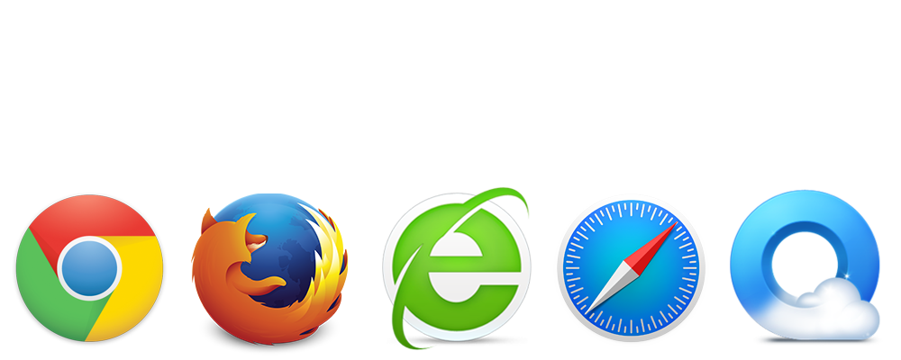

升级浏览器
为了更佳的浏览体验，将您的浏览器保持最新。在这里您可以获得最新的版本。
Outdated Browser
您的浏览器已禁用 Javascript，启用它获得更好的体验。
Outdated Browser
这是为桌面用户准备的工具，
但您可以安心在这里浏览
为了更佳的浏览体验，将您的浏览器保持最新。在这里您可以获得最新的版本。
您的浏览器已禁用 Javascript，启用它获得更好的体验。
这是为桌面用户准备的工具，
但您可以安心在这里浏览
冷静
这是为桌面
用户提供的不是为手机用户提供的。
关闭